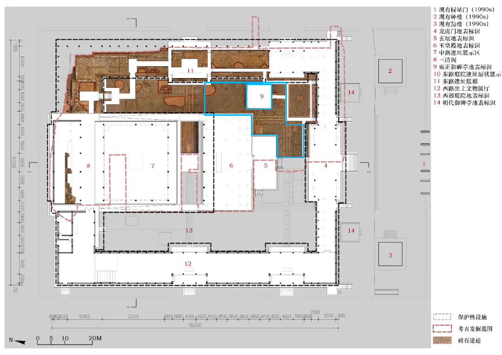
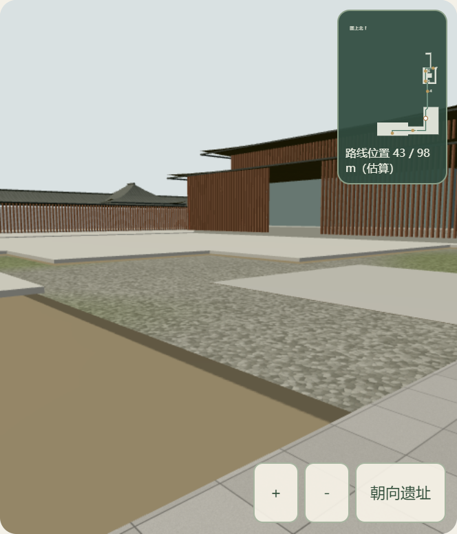

问山 · 有据的空间观察 / 2026.10.03沿着平面与实拍
细化东路庭院
大上清宫 · 现代保护展示设施 · 阶段资料模型已把东路庭院的一部分空白地面改为可辨认的卵石表面，并清除误盖庭院的通用铺装。原有七节点通道继续连通，可以观察、对照实拍，再返回原外部视角。
422.2 m²平面描线面积，模型尺度估算
97.6 m保留并验证的七节点通道
10.36 MB按需加载的庭院路线 GLB
仍未完成真实内部还原。卵石纹理、苔色和栈道支撑是依照片制作的代表性表达，不是扫描或逐块遗存复原。庭院高差与尺寸仍有估计；外部台阶、考古墙基细部、展项及若干展厅尚未完成。
打开问山网站 ↗地图「大上清宫」→「前往宫观入口」→「接近南侧入口」→「从入口进入有据参观路线」→「东路庭院观察点」。可拖动或用方向键观察，用空格暂停行走。
相同相机，直接比较
以下两组均来自实际生产预览网页。分别加载保留的旧模型和当前庭院模型，相机位置、朝向及视角完全相同。点击图片可看原尺寸。
从哪里来，做到了哪里
 参考实拍｜THAD / 五季摄影。照片与模型未做相机标定，不能把不同视角当作测量对比。
参考实拍｜THAD / 五季摄影。照片与模型未做相机标定，不能把不同视角当作测量对比。
源平面描线｜仅细化蓝线内约 422.17 平方米的范围。图中 9 号标识区保留中性平面，没有补造碑体或文字。从旧通用铺装中减去约 210.59 平方米，保留描线外的原有构件。卵石颜色、法线和粗糙度以原创程序纹理表达，较大范围的绿斑使用模型顶点颜色，避免苔色随贴图整齐重复。已加入 17 个代表性短支柱及横梁；截面和间距仍为照片下的构造估计。
公开一层平面与另一份 THAD 署名发布版本的图纸逐字节一致，均为 1080 × 764。剖面数字仍无法可靠辨认，因此沿用现有估算高程，没有把模糊标注当作已核实标高。
导出模型与网页交互均已核对
- 实际 GLB 庭院面积与描线一致；1,002 个表面三角形未被通用铺装遮盖。
- 顶点颜色已进入网页读取的 COLOR_0；基础颜色、法线和粗糙度纹理都已嵌入。
- 97.6 米路线有 3,905 个几何采样点，中心及周围 20 厘米探测点均有地面。
- 86 个沿用场地构件坐标保持一致；数字检查不代表现场测量精度。
- 30 项浏览器检查通过：按需加载、键盘、连续行走、暂停、实拍切换、外部视角和页面恢复、触摸、故障重试及减少动态效果。
- 庭院资产接入时，32 项项目测试、TypeScript 与生产构建通过；正常流程无脚本或着色器错误。
Blender 源文件重开确认：133 个网格对象、27,005 个顶点、22,143 个多边形，9 张打包纹理及两份内嵌来源文本。旧入口路线模型独立保留。
核对时发现并修正了顶点颜色误导出至 COLOR_1 的问题。另修正了测试脚本把“恢复行走前一帧”误判为到站的等待条件；现在同时核对实际目标距离。原失败记录继续保留。
本机实际性能
| 庭院观察 · 每项 8 秒 | 实际画布 | 平均 FPS | 帧耗时 p95 |
|---|
| 庭院观察点 · 桌面 | 1124 × 594 | 144.0 | 7.1 ms |
| 庭院观察点 · 手机视口 | 498 × 582 | 142.9 | 7.1 ms |
Windows · Chrome/154.0.8037.93 · Intel UHD / ANGLE D3D11。桌面视口 1920 × 1080；手机视口 390 × 844，同一桌面 GPU 模拟触摸。它不是实体手机成绩，也不是全景区或长期稳定帧率保证。

手机视口下的当前庭院。实体手机测试仍待补充。完整交互验证另测：展廊平台桌面 143.6 FPS，手机视口入口 143.9 FPS。历史阶段的持续行走和低帧率异常记录保留在入口连接版报告，不用本轮短时高值替代它们。